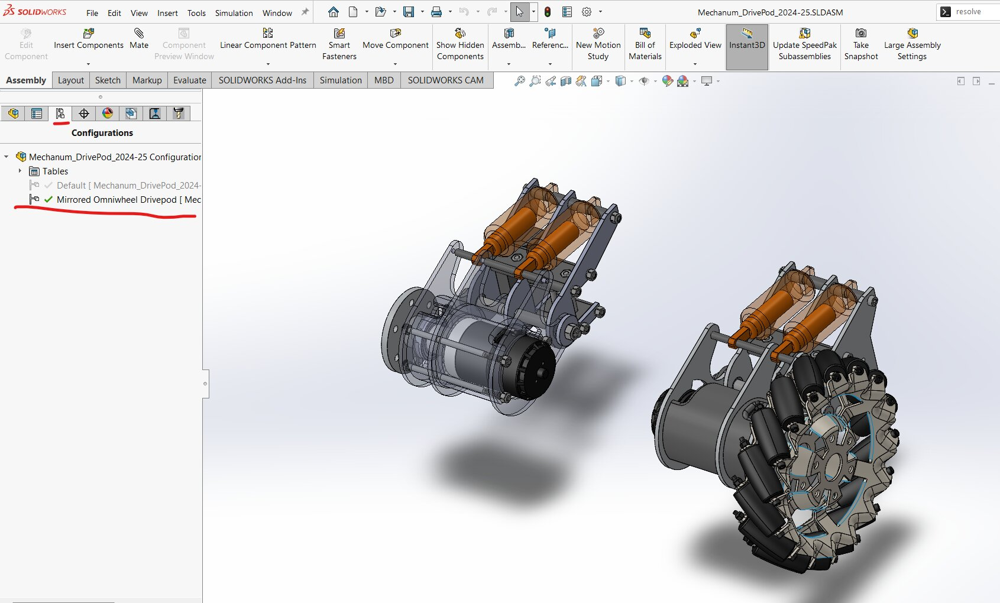
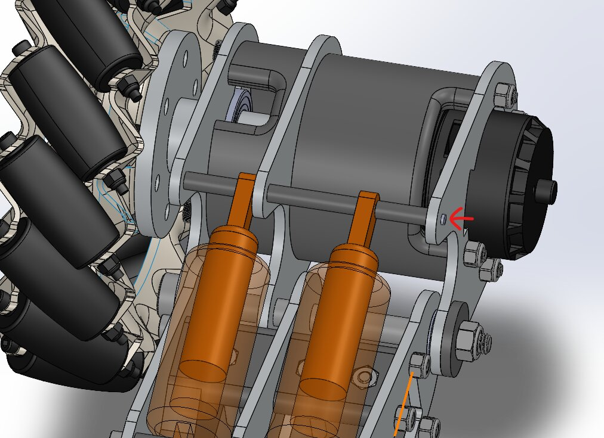
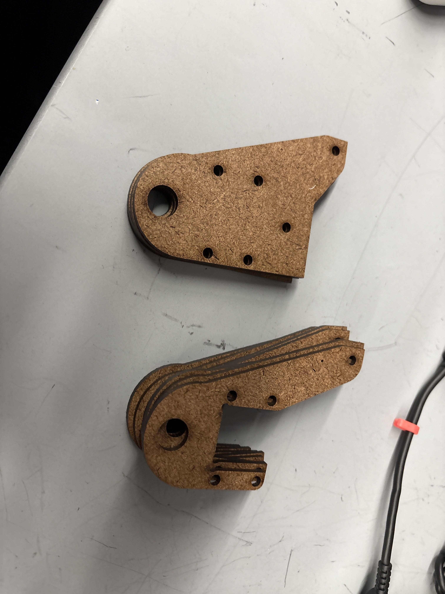
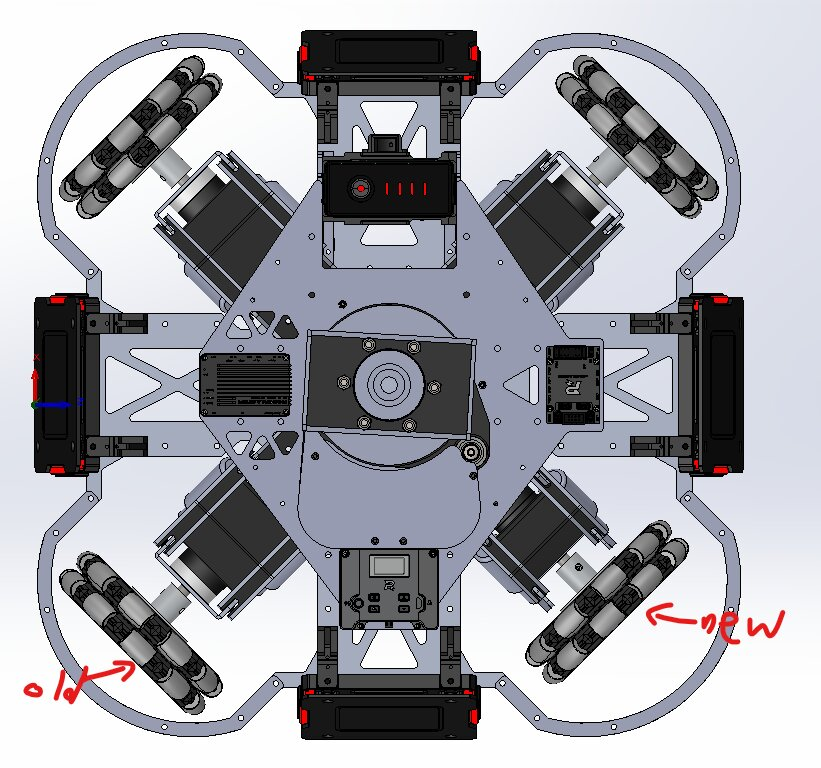

SolidWorks · FEA · Robotics · Mechanical Design · Jan 2025 – Present
Redesigned the drive pods of a competition robot from the ground up using SolidWorks — achieving 50% improved shock absorption efficiency while maintaining the exact same external package dimensions as the previous year's design. The project involved completely rethinking the internal geometry, spring-damper system architecture, and load path through the hub assembly to absorb impact energy more efficiently without increasing weight or envelope.
The previous year's drivepod design had a fundamental limitation: the shock absorbers were not well-integrated into the load path between the wheel hub and the drivetrain. Impact loads from floor contact were being transmitted directly through the drivetrain structure rather than dissipated by the damping elements — causing premature component wear and power loss during competition.
Critically, the robot's overall chassis geometry was fixed — any redesign had to maintain the exact external footprint of the drivepod assembly. This made the challenge a constrained internal redesign problem rather than a clean-sheet design, requiring creative packaging within a hard dimensional envelope.
The goal: redesign the internal geometry to route impact loads through the spring-damper elements, increase the effective spring travel, and improve the damper attachment geometry — without changing any external interface dimensions.
"Achieve 50% better shock absorption by redesigning internal geometry only — zero change to external dimensions or drivetrain interface points."
Documented the load path through the current drivepod assembly. Identified where impact energy was being transmitted through rigid structure vs. the damping elements. Mapped each component's contribution to the shock absorption function to determine which elements were effective and which were bypassed by the impact load path.
Redesigned the hub carrier, shock mount brackets, and spring preload adjustment mechanism while holding all external interface dimensions fixed. Used SolidWorks parametric modeling to efficiently explore internal layout configurations and evaluate packaging feasibility. Designed new shock absorber attachment geometry to maximize effective spring travel within the fixed envelope.
Ran FEA on the redesigned hub carrier and shock mount brackets under representative impact loading. Verified that the redesigned load path routed a significantly higher fraction of impact energy through the damping elements rather than directly through the structural members. Checked stress concentrations at critical mounting features.
Machined and assembled multiple iterations of the redesigned drivepod. Applied DFM principles to ensure the parts were manufacturable on available machine shop equipment — designing features with appropriate tolerances, accessible tool paths, and straightforward fixturing.
Tested shock absorption performance directly against the previous year's design using controlled drop tests and drivetrain impact measurements. Quantified the improvement in impact energy absorbed by the spring-damper elements vs. transmitted directly to drivetrain components, confirming the 50% improvement in shock absorption efficiency.




50% improvement in shock absorption efficiency — measured by comparing impact energy absorbed by damping elements vs. transmitted to drivetrain components under identical test conditions.
Zero external dimension changes — the redesigned assembly drops in as a direct replacement for the previous year's drivepod with no chassis or drivetrain modifications required.
Root cause confirmed: the original design's shock absorbers were geometrically constrained in a way that prevented them from reaching their rated stroke — the redesign corrected the mounting geometry to utilize full available damper travel.
Machined and assembled in the campus machine shop — developing practical experience in translating a SolidWorks model into a manufactured part with controlled tolerances and functional assembly interfaces.